业务场景：
可以自定义Word文档模板界面，根据数据ID,可以把数据回填进文档模板生成一份带数据Word文档。
实现操作：
1.先定义一个业务表单（菜单路径：敏捷开发--->业务表单设计）
设计一个业务表单（添加一个表单有三种方式，分别是在线设计，根据业务模型生成表单，添加url表单）
以在线设计表单为实例，设计主子表关系的表单
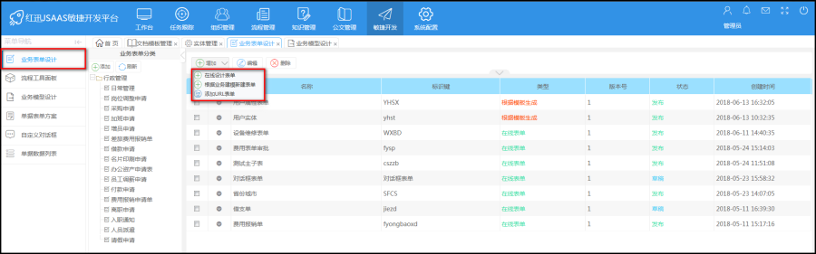
设计表单页面，设计完成后，点击生成元数据，就生成物理表，发布表单，发布表单后，Bo实体就有我们的设计的主子表表单
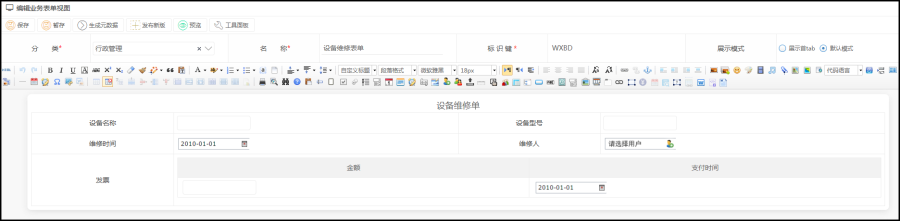
查看一下Bo实体（菜单路径：系统配置---->实体管理）
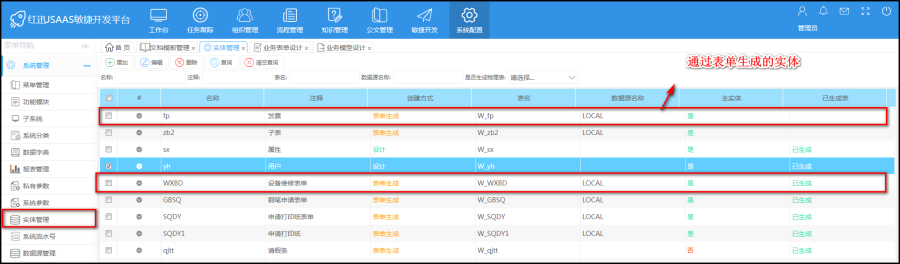
表单设计完成后，配置业务模型（一对一是指对应一条数据，一对多是指对应多条数据）
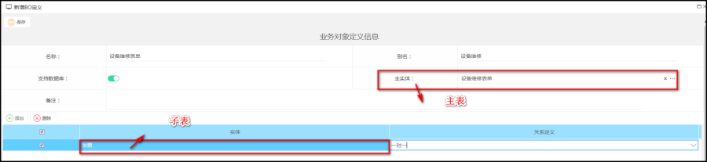
业务模型配置好，配置表单方案（菜单路径：敏捷开发---->业务表单方案）
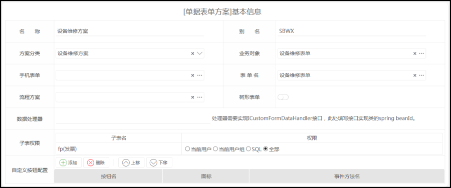
2.表单配置完成后，新建文档模板（菜单路径：工作台--->文档模板管理）
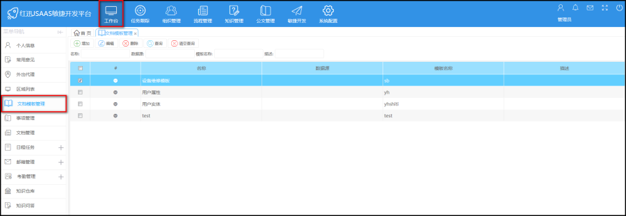
点击添加进入如下页面（配置文档模板管理有两种方式发布是sql,Bo定义 ）
先以Bo定义实现word文档的打印
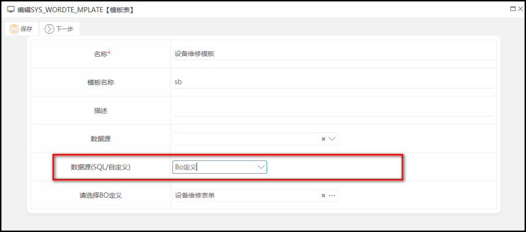
点击下一步，（一对一的关系在word文档中随便设计，但是一对多在word文档上设计表单一行必须是表头，下一行是显示数据）
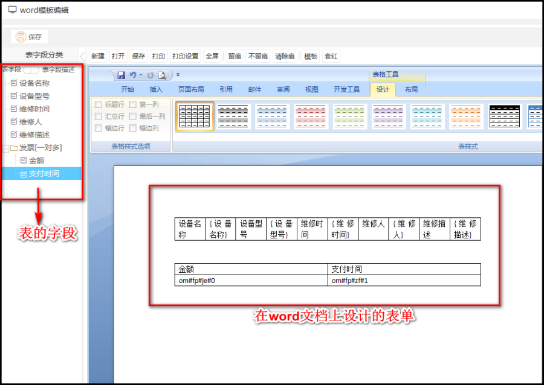
保存后，点击预览 ，需要输入pk,(pk是表的id)
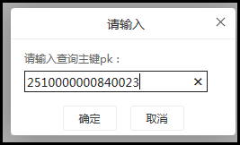
可以查看之前设置的表单
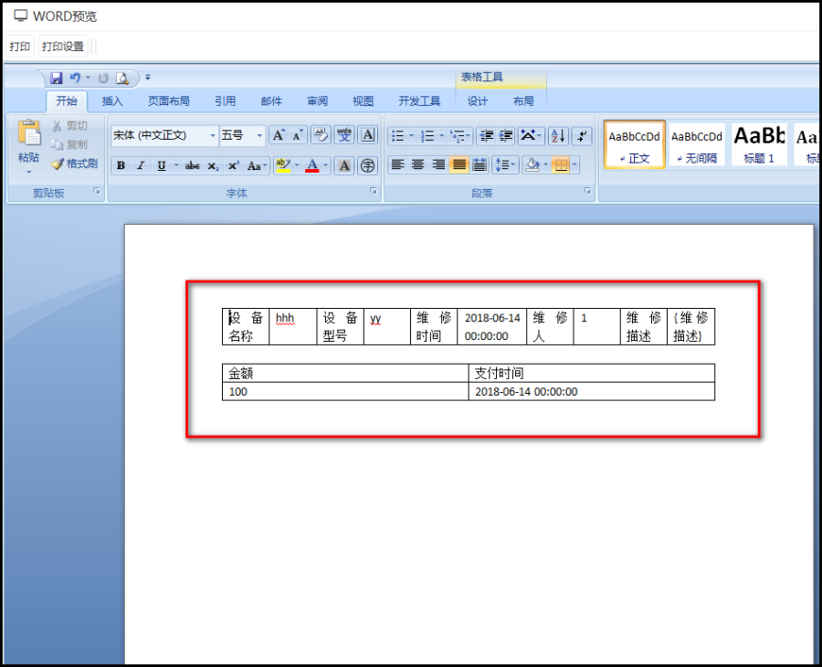
后面我们把这个word文档控件用到表单上，回到业务表单设计中用一个word控件，选择word控件，然后选择word模版，
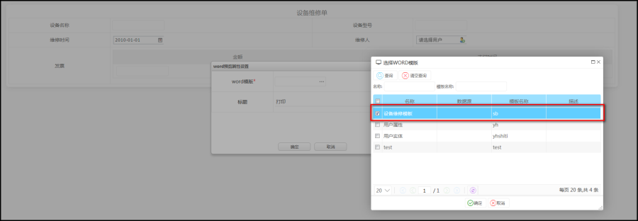
点击确定，表单上就有打印的按钮
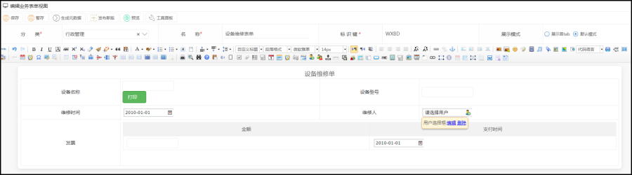
3.启动这个业务表单对应业务流程
在流程方案中启动流程是填写表单信息，这个word控件是隐藏的，因为没有值，
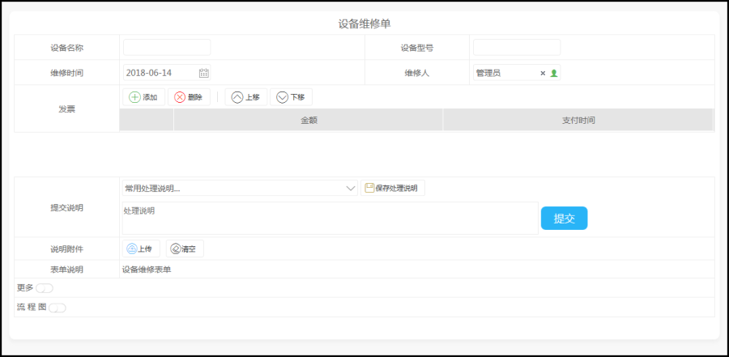
信息填写后，提交，然后到待办任务中去办理启动的流程，点击办理，表单上出现了word控件，打印的按钮（有值才能打印）
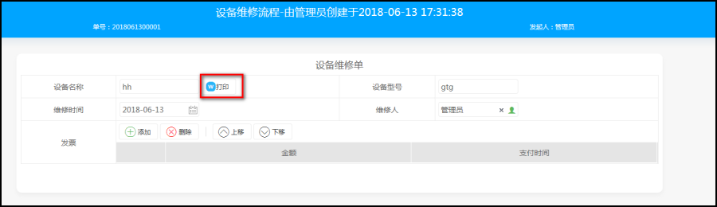
点击打印，就可以看到word文档的表单模板
4.以sql定义（主表，子表写sql）
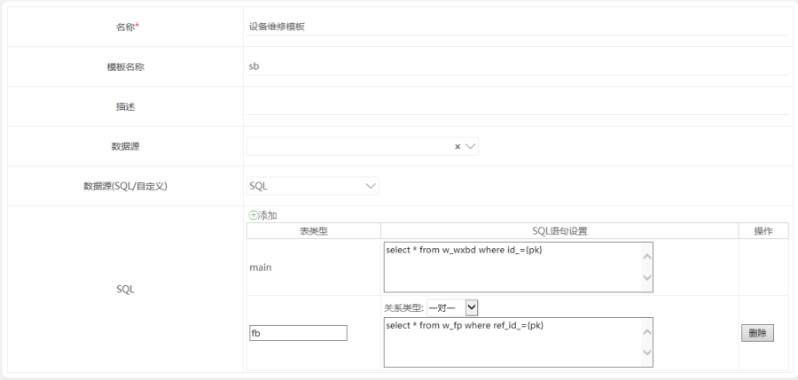
后面的操作和Bo定义是一样的